Writing OpenFisca code¶
Modelling legislation
(Rules as Code + OpenFisca) training series, session three.

Overview
- Variables
- Parameters
- Testing
1. Variables
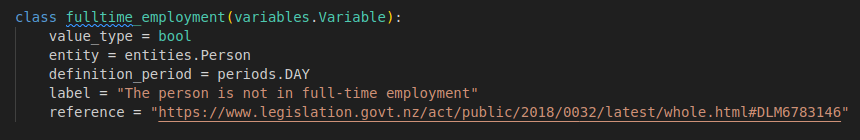Simple variable boolean example, note:
- The reference url
- The entity the variable belongs to
- The definition period
- The lack of a formula
github.com/BetterRules/openfisca-aotearoa/.../demographics/work.py
Variable with formula example
github.com/BetterRules/openfisca-aotearoa/.../demographics/work.py
Working with vectors
- OpenFisca formulas should always return vectors
- The formulas need to preserve the incoming vector 'shape'
- This means if/else statements aren't possible
2. Parameters
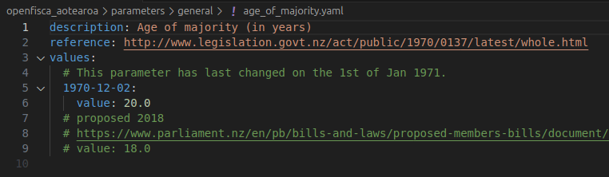Simple parameter example
github.com/BetterRules/openfisca-aotearoa/.../age_of_majority.yaml
Referencing: note ref. urls for source data
github.com/BetterRules/openfisca-aotearoa/.../asset_limits_1.yml
Time based values
github.com/BetterRules/openfisca-aotearoa/.../asset_limits_1.yml
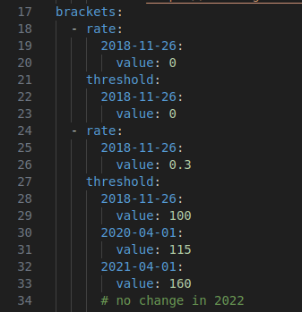
Scale example with use case
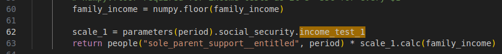github.com/BetterRules/openfisca-aotearoa/.../income_test_1.yaml
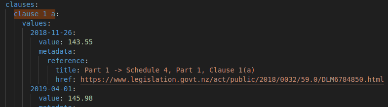
Complex example and use case
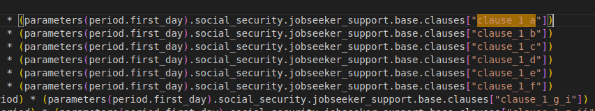github.com/BetterRules/openfisca-aotearoa/.../jobseeker_support/base.yaml
3. Tests
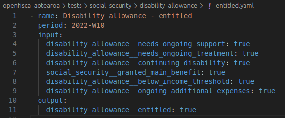Simple test with multiple inputs and one output
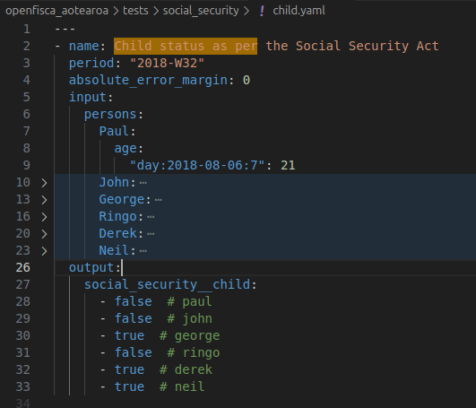
Testing a single formula from multiple scenarios
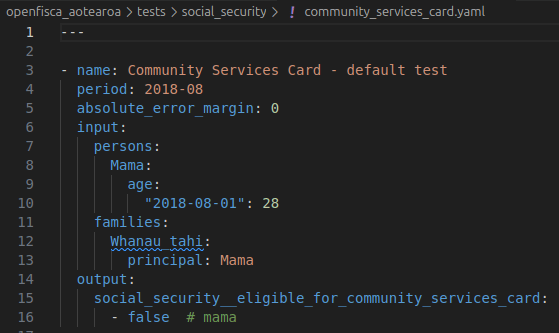
Testing example that utilises entities (families)
github.com/BetterRules/openfisca-aotearoa/.../community_services_card.yaml
Testing example that utilises entities (families)
github.com/BetterRules/openfisca-aotearoa/.../community_services_card.yaml
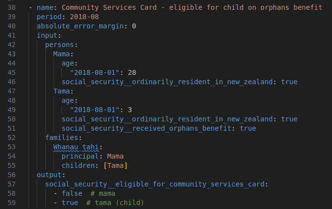
Testing example that utilises multiple family members
github.com/BetterRules/openfisca-aotearoa/.../community_services_card.yaml
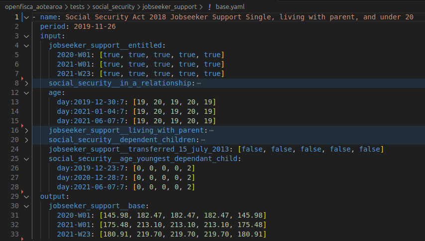
Testing multiple scenarios over multiple periods
github.com/BetterRules/openfisca-aotearoa/.../jobseeker_support/base.yaml
Hotkeys
f: full screens: speaker notesb: pause←/→/space: navigate through slidescltr/alt+ click to zoom